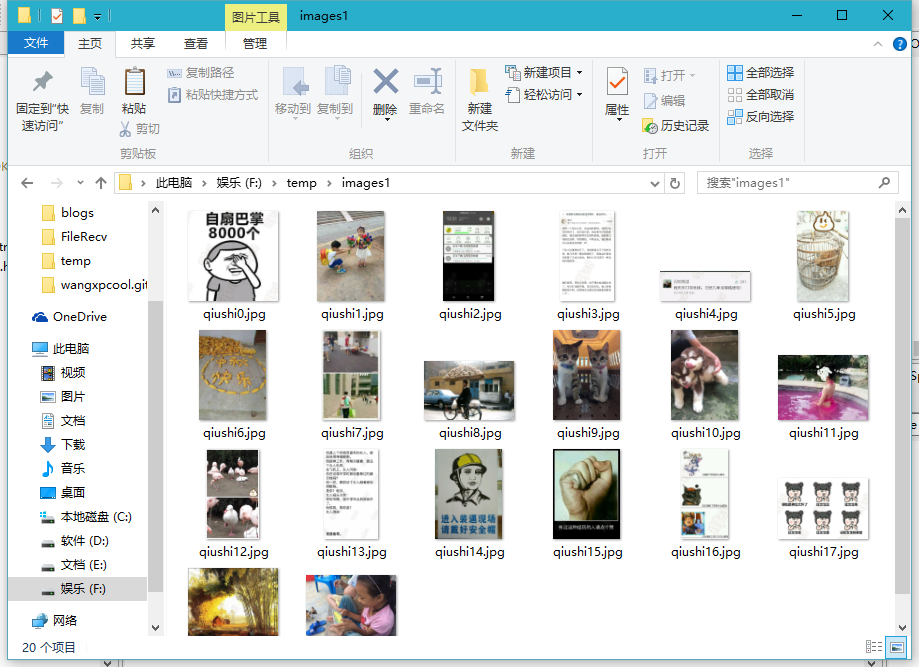

simple Java Python on qiushibaike.com
陆陆续续学javaPython很久了，前几天有个想法是爬取QQ空间的相册图片，结果自己还是太年轻， 因为QQ空间的结构实在是太复杂，模拟登陆不上去所以暂时放弃。于是为了解愤，找了一个小站来练练手//嘿嘿没错就是你 ，糗事百科！
首先找到我们的源目标：http://www.qiushibaike.com，因为是想找图片，所以去图片区，目标链接http://www.qiushibaike.com/imgrank/
1、获取首页信息
通过java内置Api java.net创建一个Url
用UrlConnection创建连接//这里要注意一下的是糗百网站需要自行设置一下请求头，不然访问不了
创建一个输入流将获取到的Url内容保存在String中
2、获取网页中各个图片链接
在首页中，用F12开发者工具检查所要获取图片信息
可以看到，糗百的每个图片都有一个特定的Url,并且包含在一个<a>标签中
此时我们就要用正则将处在这个A标签中的内容匹配出来，我写的正则是<a href=\"/article/\\d+?\" target=\"_blank\"><img src=\"(.+?)\" alt="
通过Pattern.matcher我们就能得到每个图片的链接了
3、保存图片到本地
继续接上的链接，我们就可以通过这个链接直接访问图片了，比如这个http://pic.qiushibaike.com/system/pictures/11750/117501303/medium/app117501303.jpg
然后我们就可以通过刚才第一步的方法获取到这个图片的输入流，并将其保存在本地
值得注意的是这里的输入流，可以通过简单的方式一步一步地读取输入流，然后直接写入进一个文件输出流
就像这样：
InputStream input=connection.getInputStream;
FileOutputStream out=new FileOutputStream("xxx.jpg");
while(input.read()!=-1)
out.write();
当然这只是简化版的，具体的方式可以百度
4、fix and test
效果截图：
以下是源代码
package my;
import java.io.BufferedReader;
import java.io.ByteArrayOutputStream;
import java.io.File;
import java.io.FileOutputStream;
import java.io.IOException;
import java.io.InputStream;
import java.io.InputStreamReader;
import java.net.HttpURLConnection;
import java.net.URL;
import java.net.URLConnection;
import java.util.ArrayList;
import java.util.List;
import java.util.regex.Matcher;
import java.util.regex.Pattern;
public class step0 {
public static void main(String[] args) {
for(int page=1;page<=10;page++){//获取前十页图片区的图片
try {
String html=getResult("http://www.qiushibaike.com/imgrank/page/"+page);
List<String> list=getNeeds(html);
File f=new File("f:\\temp\\images"+page);
f.mkdir();
for(int i=0;i<list.size();i++){
System.out.println(list.get(i));
saveImage(list.get(i), "images"+page+"\\qiushi",i);
}
} catch (Exception e) {
e.printStackTrace();
}
}
}
static List<String> getNeeds(String result){//正则匹配图片链接
String regex="<a href=\"/article/\\d+?\" target=\"_blank\"><img src=\"(.+?)\" alt=";
Pattern pattern = Pattern.compile(regex);
Matcher matcher = pattern.matcher(result);
// 是否存在匹配成功的对象
Boolean isFind = matcher.find();
ArrayList<String> list= new ArrayList<String>();
while (isFind) {
list.add(matcher.group(1));
isFind = matcher.find();
}
return list;
}
static String getResult(String url){//把网页保存在String里
String result = "";
// 定义一个缓冲字符输入流
BufferedReader in = null;
try {
// 将string转成url对象
URL realUrl = new URL(url);
// 初始化一个链接到那个url的连接
URLConnection connection = realUrl.openConnection();
connection.setRequestProperty("User-Agent","Mozilla/5.0 (Windows NT 6.3; WOW64; Trident/7.0; rv:11.0) like Gecko");
//这里需要自定义一下请求头，不然糗事百科主页不给访问
// 开始实际的连接
connection.connect();
// 初始化 BufferedReader输入流来读取URL的响应
in = new BufferedReader(new InputStreamReader(
connection.getInputStream(),"utf-8"));
// 用来临时存储抓取到的每一行的数据
String line;
while ((line = in.readLine()) != null) {
// 遍历抓取到的每一行并将其存储到result里面
result += line;
}
} catch (Exception e) {
System.out.println("发送GET请求出现异常！" + e);
e.printStackTrace();
}
// 使用finally来关闭输入流
finally {
try {
if (in != null) {
in.close();
}
} catch (Exception e2) {
e2.printStackTrace();
}
}
return result;
}
static void saveImage(String strUrl,String name,int nameIndex) throws IOException{//保存图片到本地
//构造URL
URL url = new URL(strUrl);
//构造连接
HttpURLConnection conn = (HttpURLConnection)url.openConnection();
//这个网站要模拟浏览器才行
conn.setRequestProperty("User-Agent","Mozilla/5.0 (Windows NT 6.3; WOW64; Trident/7.0; rv:11.0) like Gecko");
//打开连接
conn.connect();
//打开这个网站的输入流
InputStream inStream = conn.getInputStream();
//用这个做中转站 ，把图片数据都放在了这里，再调用toByteArray()即可获得数据的byte数组
ByteArrayOutputStream outStream = new ByteArrayOutputStream();
byte [] buf = new byte[1024];
int len = 0;
//读取图片数据
while((len=inStream.read(buf))!=-1){
outStream.write(buf,0,len);
}
inStream.close();
outStream.close();
String path="f:\\temp\\"+name+nameIndex+".jpg";
//把图片数据填入文件中
File file = new File(path);
FileOutputStream op = new FileOutputStream(file);
op.write(outStream.toByteArray());
System.out.println(path+" has been saved\n");
op.close();
}
}
{kind=link}